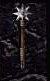

| Original Name | Nom Français |
| Ancient Morningstar +3 | Fléau antique des Hauts Elfes (+3) |
|
 |
|
| Lieu |
| Zone Séraphe Makrsh P'Tangh |
| Bonus |
| 277-406 de dégats contre les morts-vivants |
| Commentaires |
| 3 Commentaires |
|
Zenith
Messages: 7 |
Paladin Probablement la meilleur arme du paladin, à l'exeption si vous êtes plus orienter prêtre (Clerc) vous utiliserez d'avantage le fléaux d'arme du Soleil.
Posté le : 09-12-2003 18:59:03 |
|
Zell
Messages: 24 |
- Utile pour un paladin quand il pvp... Sinon mieu vaut utiliser les fleau d'arme du soleil pour XP avec des sorts ...
Posté le : 23-05-2004 04:45:51 |
|
Eyolf Wotan
Messages: 11 |
- Un vrai paladin n'a pas de sorts de terre  (Dans les vrais JDR Ôô) (Dans les vrais JDR Ôô)
Mais oui, j'adore trop ce fleau, il tape pas mal (j'ai deja fait 2k en 2 coups avec auras de x4 Ôô Gros coup de moule)
La vitesse est mieux que l'etoile, mais s'tjrs pas la vitesse de la vip
Les degats sont respectables, le skin excellent 
Posté le : 27-05-2004 09:19:34 |